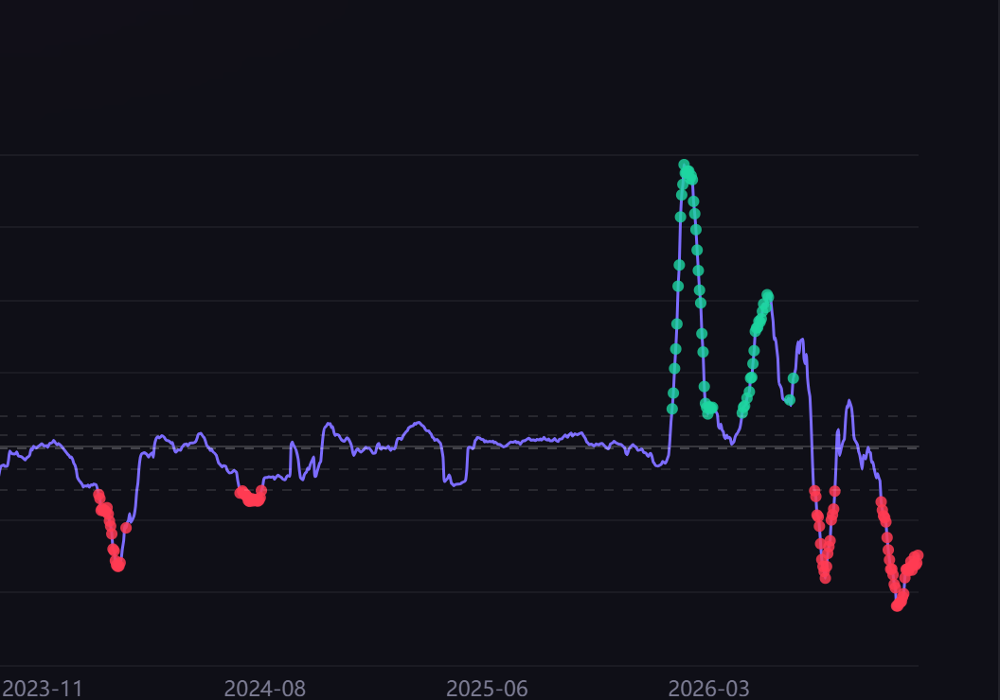
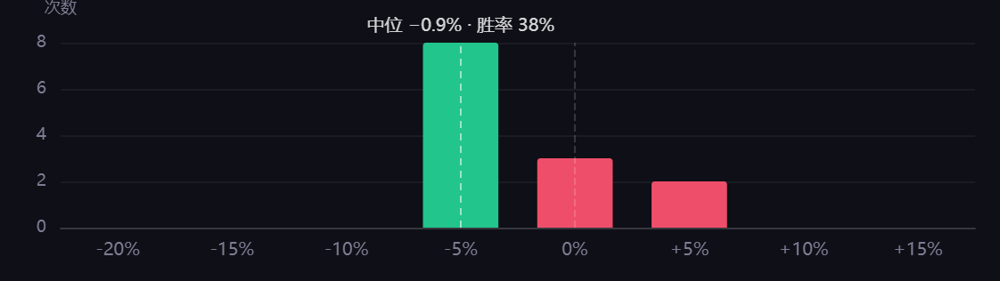
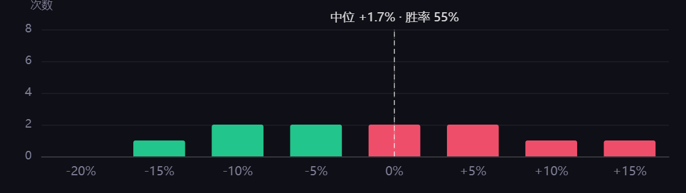
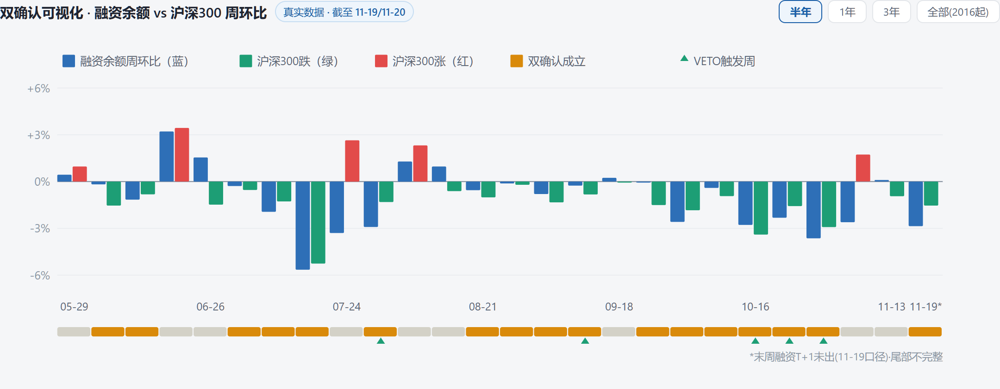
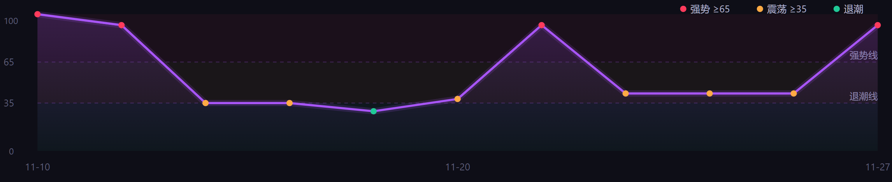
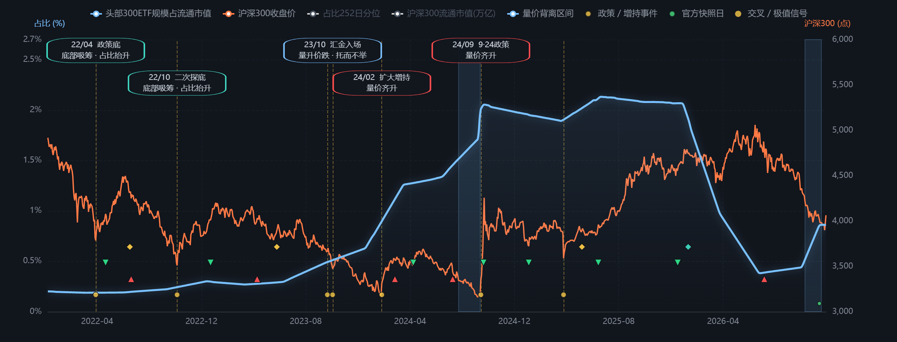
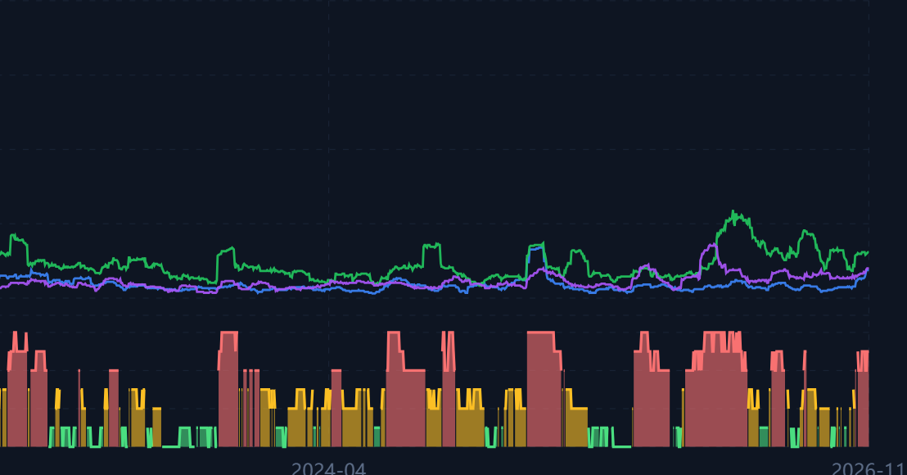
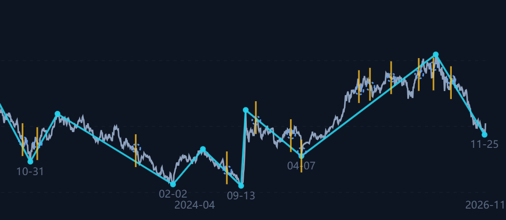

开场数据截至 2026-11-27
今天的几件事
欢迎收看今天的每日市场语音简报。数据截至11月27日收盘。从资金、情绪到技术位置、存量托底，把大盘捋一遍。
ETF 资金观测台数据截至 2026-11-27
资金底亮灯，但不是买点

资金温度信号 · 面板局部
20日底部样本 · 面板局部
120日底部样本 · 面板局部先看背景,ETF资金观测台。20天净申购3954.1亿,流温度29.9%、历史98分位,指数却在120日的8分位。钱在跌里进场,成交放大到20日均量的1.41倍,量能跟上了。历史13段同类信号,20日中位−0.9%、胜率38%。资金底,不是买点。盯住后续量价能不能接力。
融资 × 指数双确认数据截至 2026-11-19 / 2026-11-20
两柱一起朝下，但还差三周

双确认周度图 · 融资 × 沪深300 · 面板局部重点看这张双确认图。蓝柱是融资周环比，绿柱是指数周环比；两根柱子同一周朝下，才算一次双确认。连着4周双确认，否决才触发，历史上29次。最近09月24号到10月30号连着6周朝下，亮了3次三角。到19号这周，融资负2.86%、指数负1.54%，两柱又同向朝下。可连降才1周，离4周还差3周，否决没触发，防御档不动。末周融资T+1未出，尾部不完整，等补齐再看。只做纪律检查，不是买卖信号。
市场宽度 · 赚钱效应数据截至 2026-11-27
赚钱效应铺开，但情绪分不是买点

情绪分近20交易日 · 六因子状态识别 · 面板局部接着看市场宽度，也就是全市场的赚钱效应。情绪总分92分，档位是强势。全市场涨5025家、跌181家，上涨占比96.2%，宽度是铺开的。六个因子里，连板家数、涨跌比、涨停+跌停、炸板率都拿了满分，说明不只是指数在涨。唯一没拿满的是最高连板，12比20，热度还差点意思。分数只做状态识别，不是买卖信号，别拿它当买入指令。
大盘技术结构数据截至 2026-11-27
指数在中枢下沿，只讲位置不预测
再看大盘技术结构，只讲位置，不做预测。上证 3606.49，处于日线最后一个中枢（3928–4175）下沿之下 8.9%，属于向下离开中枢的状态，周线同样位于中枢（3816–4034）下方。今日预案的状态是，弱势震荡 · 区间内运行 · 日线向下离开中枢（ZD 3927.85 下方） · 周线 ABC 调整（下） · 量能持平（5/20日 1.05×）。If-Then 是条件式预案：到了触发条件再按纪律对照，不是提前预判涨跌。
国家队 · 存量托底数据截至 2026-11-27
存量托底处中枢分位，非买卖信号

头部300ETF占流通市值比 · 存量托底 · 面板局部最后一块，国家队的存量托底，这和前面 ETF 的资金流向是两回事。四只头部沪深300ETF，占沪深300流通市值的0.861%，处在近252个交易日的59.9%分位。近20日净申购强度+15.6 bp，同期指数+1.95%，增量资金和价格同向。这里看的是存量托底有多厚，前面看的是钱往哪流，两者都是辅助判断，不是买卖信号。而且这类交叉信号历史上没到统计显著，只标状态切换，不预测见顶见底。
跨资产共振数据截至 2026-11-27
海外波动齐升，先别急着抄底

共振强度 · 面板局部
沪深300 · 面板局部再看背景,跨资产共振。海外2升0降,共振2.5档,11月25号上穿、连续3天,沪深3004063点;状态是风险释放/观望。只做识别,不预测涨跌,也不是减仓指令。
结尾数据截至 2026-11-27
风险提示
以上就是今天的简报。内容仅为状态识别与风险揭示,不构成投资建议。市场有风险,投资需谨慎。我们下期见。